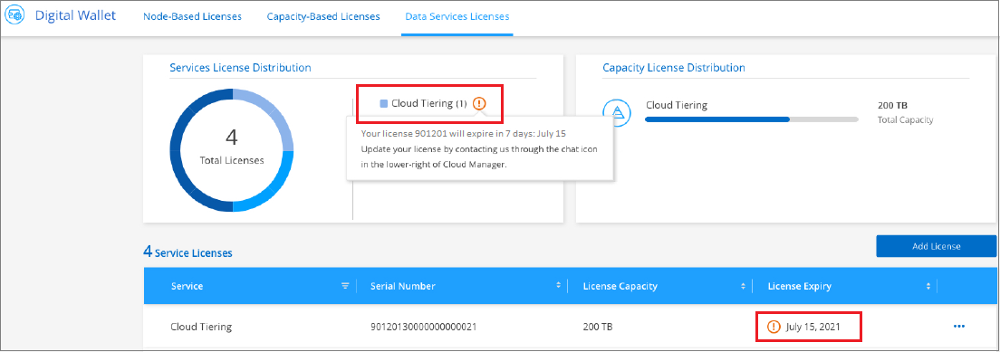

请求文档变更
请求文档变更 在 GitHub 上编辑
在 GitHub 上编辑 提供者指南
提供者指南为 Cloud Tiering 设置许可
从第一个集群设置分层时，即可免费试用 30 天的 Cloud Tiering 。免费试用结束后，您需要通过云提供商市场上的按需购买 Cloud Manager 订阅， NetApp 的 BYOL 许可证或两者的组合为 Cloud Tiering 付费。
在阅读其他内容之前，请先阅读一些注释：
-
如果您已在云提供商的市场上订阅 Cloud Manager 订阅（ PAYGO ），则您也会自动从内部 ONTAP 系统订阅 Cloud Tiering 。您将在 Cloud Tiering * 许可 * 选项卡中看到活动订阅。您无需重新订阅。
-
BYOL Cloud 分层许可证是一个 float 许可证，您可以在 Cloud Manager 帐户中的多个内部 ONTAP 集群之间使用。这与您过去为 FabricPool 每个集群购买 cluster 许可证的情况不同。
-
将数据分层到 StorageGRID 不收取任何费用，因此无需 BYOL 许可证或 PAYGO 注册。此分层数据不计入许可证中购买的容量。
使用 Cloud Tiering PAYGO 订阅
您可以从云提供商的市场订阅按需购买，从而获得使用 Cloud Volumes ONTAP 系统和云分层等多种云数据服务的许可。
从 AWS Marketplace 订阅
从 AWS Marketplace 订阅 Cloud Tiering ，设置按需购买的订阅，以便将数据从 ONTAP 集群分层到 AWS S3 。
-
在 Cloud Manager 中，单击 * 分层 > 许可 * 。
-
单击 AWS Marketplace 下的 * 订阅 * ，然后单击 * 继续 * 。
-
从订阅 "AWS Marketplace"，然后重新登录到 Cloud Central 以完成注册。
以下视频显示了该过程：
从 Azure Marketplace 订阅
从 Azure Marketplace 订阅云分层以设置按需购买的订阅，以便将数据从 ONTAP 集群分层到 Azure Blob 存储。
-
在 Cloud Manager 中，单击 * 分层 > 许可 * 。
-
单击 Azure Marketplace 下的 * 订阅 * ，然后单击 * 继续 * 。
-
从订阅 "Azure Marketplace"，然后重新登录到 Cloud Central 以完成注册。
以下视频显示了该过程：
从 GCP Marketplace 订阅
从 GCP Marketplace 订阅 Cloud Tiering ，设置按需购买订阅，以便将数据从 ONTAP 集群分层到 Google Cloud 存储。
-
在 Cloud Manager 中，单击 * 分层 > 许可 * 。
-
单击 GCP Marketplace 下的 * 订阅 * ，然后单击 * 继续 * 。
-
从订阅 "GCP 市场"，然后重新登录到 Cloud Central 以完成注册。
以下视频显示了该过程：
使用 Cloud Tiering BYOL 许可证
NetApp 自带许可证的期限为 2 个月， 12 个月， 24 个月或 36 个月。BYOL * 云分层 * 许可证是一个 float 许可证，您可以在 Cloud Manager 帐户中的多个内部 ONTAP 集群之间使用。Cloud Tiering 许可证中定义的总分层容量将在所有 * 内部集群之间共享，从而使初始许可和续订变得轻松。
如果您没有 Cloud Tiering 许可证，请联系我们购买一个：
-
mailto ： ng-cloud-tiering@netapp.com ？ Subject=Licensing[ 发送电子邮件以购买许可证 ] 。
-
单击 Cloud Manager 右下角的聊天图标以请求许可证。
或者，如果您有一个未分配的基于节点的 Cloud Volumes ONTAP 许可证，而您不会使用该许可证，则可以将其转换为具有相同美元等价性和相同到期日期的 Cloud Tiering 许可证。 "有关详细信息，请访问此处"。
您可以使用 Cloud Manager 中的数字电子钱包页面管理 Cloud Tiering BYOL 许可证。您可以添加新许可证并更新现有许可证。
自 2021 年 8 月 21 日起推出全新 Cloud Tiering BYOL 许可
全新的 * 云分层 * 许可证于 2021 年 8 月推出，适用于使用 Cloud Tiering 服务的 Cloud Manager 中支持的分层配置。Cloud Manager目前支持分层到以下云存储：Amazon S3、Azure Blob存储、Google云存储、S3兼容对象存储、IBM云对象存储和StorageGRID。
您过去可能用于将内部ONTAP 数据分层到云的*镜像*许可证仅适用于无法访问互联网的站点(也称为"非公开站点")中的ONTAP 部署或使用FabricPool 镜像的FabricPool MetroCluster 系统。如果您使用的是这些配置、则可以使用System Manager或ONTAP 命令行界面在每个集群上安装FabricPool 许可证。

|
请注意，分层到 StorageGRID 不需要 FabricPool 或云分层许可证。 |
如果您当前正在使用 FabricPool 许可，则在 FabricPool 许可证达到到期日期或最大容量之前，您不会受到影响。如果您需要更新许可证，请联系 NetApp ，或者在更早版本时联系 NetApp ，以确保将数据分层到云的能力不会中断。
-
如果您使用的配置在 Cloud Manager 中受支持，则 FabricPool 许可证将转换为 Cloud Tiering 许可证，并显示在数字电子钱包中。当这些初始许可证到期时，您需要更新 Cloud Tiering 许可证。
-
如果您使用的配置在 Cloud Manager 中不受支持，则可以继续使用 FabricPool 许可证。 "请参见如何使用 System Manager 进行许可证分层"。
以下是您需要了解的有关这两个许可证的一些信息：
| Cloud Tiering 许可证 | FabricPool 许可证 |
|---|---|
这是一个 float 许可证，您可以跨多个内部 ONTAP 集群使用。 |
这是您为每个集群购买的一个许可证，并为 _every 集群购买许可证。 |
它已在 Cloud Manager 中的 Digital Wallet 中注册。 |
它可使用 System Manager 或 ONTAP 命令行界面应用于各个集群。 |
分层配置和管理通过 Cloud Manager 中的 Cloud Tiering 服务完成。 |
分层配置和管理可通过 System Manager 或 ONTAP 命令行界面完成。 |
配置后，您可以使用免费试用版在 30 天内无许可证使用分层服务。 |
配置完成后，您可以对前 10 TB 的数据进行分层以免费使用。 |
获取 Cloud Tiering 许可证文件
购买 Cloud Tiering 许可证后，您可以在 Cloud Manager 中输入 Cloud Tiering 序列号和 NSS 帐户或上传 NLF 许可证文件来激活此许可证。以下步骤显示了如果您计划使用此方法，如何获取 NLF 许可证文件。
-
登录到 "NetApp 支持站点" 然后单击 * 系统 > 软件许可证 * 。
-
输入 Cloud Tiering 许可证序列号。

-
在 * 许可证密钥 * 下，单击 * 获取 NetApp 许可证文件 * 。
-
输入您的 Cloud Manager 帐户 ID （在支持站点上称为租户 ID ），然后单击 * 提交 * 下载许可证文件。

您可以通过从 Cloud Manager 顶部选择 * 帐户 * 下拉列表，然后单击您帐户旁边的 * 管理帐户 * 来查找 Cloud Manager 帐户 ID 。您的帐户 ID 位于概述选项卡中。
将 Cloud Tiering BYOL 许可证添加到您的帐户
为 Cloud Manager 帐户购买 Cloud Tiering 许可证后，您需要将此许可证添加到 Cloud Manager 中才能使用 Cloud Tiering 服务。
-
单击 * 所有服务 > 数字电子钱包 > 数据服务许可证 * 。
-
单击 * 添加许可证 * 。
-
在 Add License 对话框中，输入许可证信息并单击 * 添加许可证 * ：
-
如果您拥有分层许可证序列号并知道您的 NSS 帐户，请选择 * 输入序列号 * 选项并输入该信息。
如果下拉列表中没有您的 NetApp 支持站点帐户， "将 NSS 帐户添加到 Cloud Manager"。
-
如果您有分层许可证文件，请选择 * 上传许可证文件 * 选项，然后按照提示附加该文件。

-
Cloud Manager 会添加许可证，以便 Cloud Tiering 服务处于活动状态。
更新 Cloud Tiering BYOL 许可证
如果您的许可期限即将到期，或者您的许可容量即将达到限制，您将在 Cloud Tiering 中收到通知。

此状态也会显示在 " 数字电子钱包 " 页面中。

您可以在 Cloud Tiering 许可证到期之前对其进行更新，以便将数据分层到云的能力不会中断。
-
单击 Cloud Manager 右下角的聊天图标以请求延长您的期限或为特定序列号请求 Cloud Tiering 许可证的额外容量。
在您为许可证付费并将其注册到 NetApp 支持站点后， Cloud Manager 会自动在数字电子邮件中更新许可证，并且数据服务许可证页面将在 5 到 10 分钟内反映此更改。
-
如果 Cloud Manager 无法自动更新许可证，则需要手动上传许可证文件。
-
您可以 从 NetApp 支持站点获取许可证文件。
-
在数字电子邮件页面的 Data Services Licenses 选项卡中，单击
 对于要更新的服务序列号，请单击 * 更新许可证 * 。
对于要更新的服务序列号，请单击 * 更新许可证 * 。
-
在 Update License 页面中，上传许可证文件并单击 * 更新许可证 * 。
-
Cloud Manager 会更新许可证，以便 Cloud Tiering 服务继续处于活动状态。
将Cloud Tiering许可证应用于特殊配置中的集群
以下配置中的ONTAP 集群可以使用云分层许可证、但应用此许可证的方式必须与典型的单节点和HA配置的ONTAP 集群不同：
-
分层镜像配置中的集群(连接到两个对象存储的集群)
目前不支持使用FabricPool 镜像的MetroCluster 配置
-
将数据分层到IBM Cloud Object Storage的集群
具有FabricPool 许可证的现有集群的进程
当您 "在Cloud Tiering中发现任何这些特殊集群类型"、Cloud Tiering可识别FabricPool 许可证、并将该许可证添加到数字市场。这些集群将继续照常对数据进行分层。FabricPool 许可证过期后、您需要购买Cloud Tiering许可证。
新创建集群的进程
在Cloud Tiering中发现典型集群时、您将使用Cloud Tiering界面配置分层。在这些情况下、将执行以下操作：
-
"父"云分层许可证可跟踪所有集群用于分层的容量、以确保许可证中有足够的容量。总许可容量和到期日期显示在数字电子钱包中。
-
每个集群都会自动安装"子"分层许可证、以便与"父"许可证进行通信。

|
System Manager或ONTAP 命令行界面中显示的"子"许可证的许可容量和到期日期不是真实信息、因此、如果信息不相同、请勿担心。这些值由Cloud Tiering软件在内部进行管理。真实信息会在"数字电子钱包"中进行跟踪。 |
对于上述两种配置、您需要使用System Manager或ONTAP 命令行界面(而不是使用云分层界面)配置分层。因此、在这些情况下、您需要从Cloud Tiering界面手动将"子"许可证推送到这些集群。
请注意、由于在分层镜像配置中、数据会分层到两个不同的对象存储位置、因此您需要购买一个具有足够容量的许可证、以便将数据分层到这两个位置。
-
使用System Manager或ONTAP 命令行界面安装和配置ONTAP 集群。
此时请勿配置分层。
-
"购买Cloud Tiering许可证" 新集群所需的容量。
-
在Cloud Manager中、 "将许可证添加到Digital Wallet中"。
-
在Cloud Tiering中、 "发现新集群"。
-
在集群信息板中、单击
并选择*部署许可证*。
-
在_Deploy License_对话框中、单击*部署*。
子许可证将部署到ONTAP 集群。
-
返回到System Manager或ONTAP 命令行界面并设置分层配置。